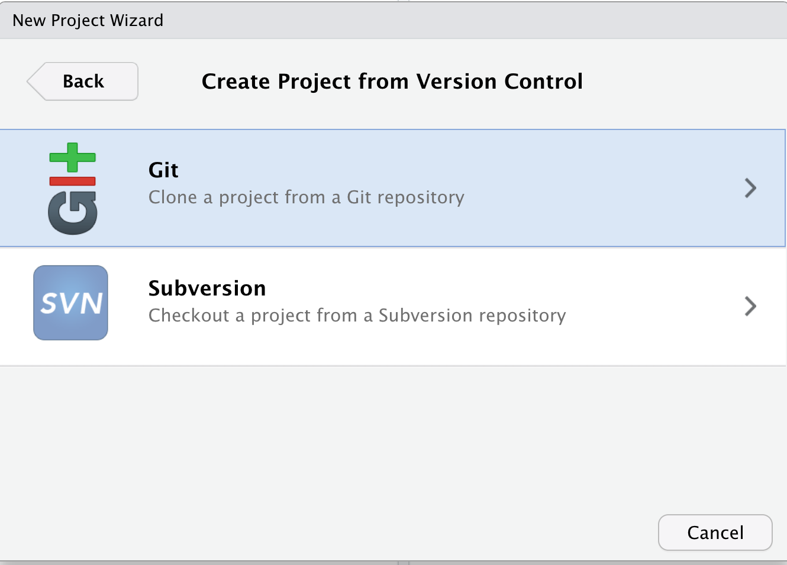
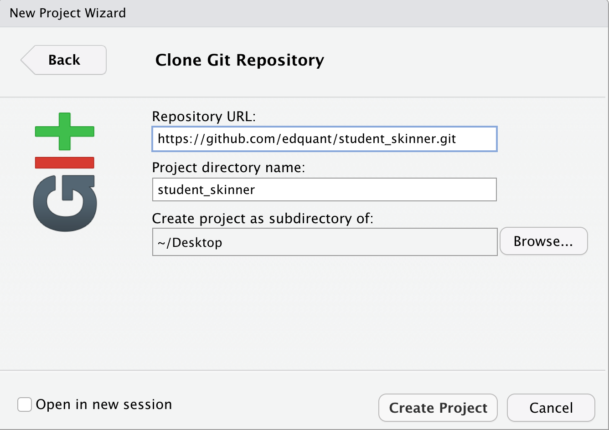
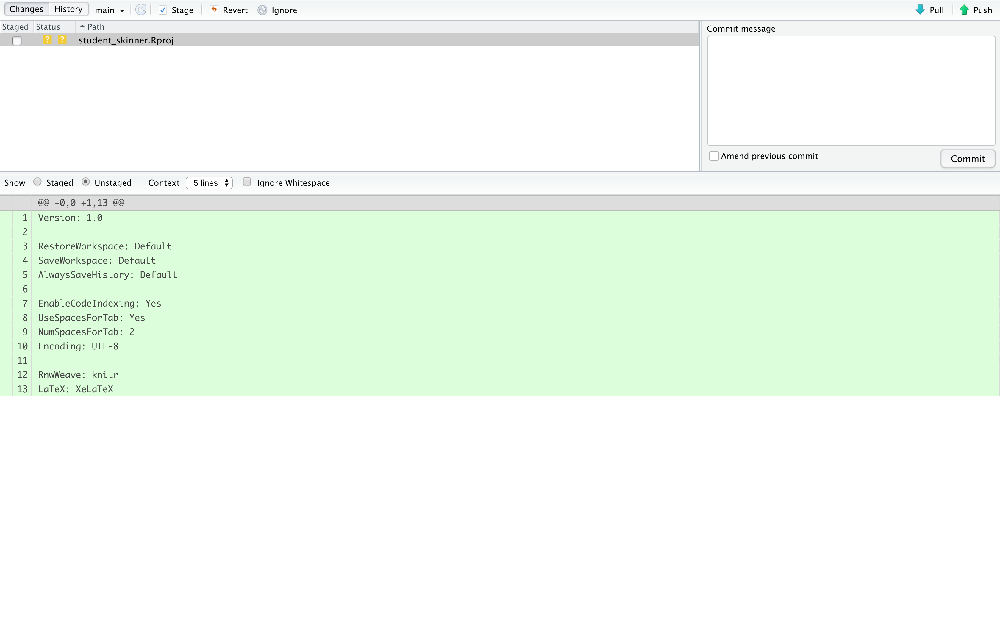

EDH 7916: Contemporary Research in Higher Education
Spring 2022
A course in quantitative research workflow for students in the higher education administration program at the University of Florida
Overview Course information Meeting location Software Schedule Lessons Assignments Questions Past courses About
Introduction to Git
From the git website http://git-scm.com/
Git is a free and open source distributed version control system designed to handle everything from small to very large projects with speed and efficiency.
Why use git?
With so many other (read: easier!) ways to share and collaborate on documents, why use git? Isn’t it a bit overkill to learn an entirely new syntax? Why not just email files or use something like DropBox? Because it is very easy to end up with something like this:

Credit: Jorge Chan
As complexity increases, so does the need for git
\[Project = f(size, scope, collaborators)\]As any part of that function grows, so too does the need for a work flow that:
- Allows for many moving parts
- Allows for peaceful collaboration (no overwrites)
- Allows for timely collaboration (synchronous)
- Allows for distant collaboration (centralized file location)
- Allows for version control (so you can go back if necessary)
Git was designed to do all these things, so it works better than other systems.
What’s the difference between git and GitHub?
Yep, you guessed it. Git is the system/language that supports version control. GitHub is an online service that will host your remote repositories, for free if public or a small fee if private. (Students get an education discount and some free repos. Check out https://education.github.com/.)
RStudio is nice because it provides an nice point-and-click interface for git. (Sourcetree and GitHub Desktop are also really nice GUIs.) If you want to run git at the command line, go for it! But using RStudio or another GUI is fine.
How does git/GitHub work?

Credit: Lbhtw (Own work)
Plain text and git
Git works best with plain text files. This is because it notes the differences across two plain text files rather than just copying and re-copying the same file over and over again as it changes. When you’ve only changed one word, git’s method of version control is much more efficient than making a whole new copy.
It’s also useful when you need to merge two files. If file B is just file A with new section, file B can be easily merged into file A by inserting the new section — just like you would add a paragraph in a paper you’re writing. R scripts are plain text. Some data files, like *.csv, are plain text. This is why git works really well with data analysis workflows.
On the other hand, git does not work as well with binary files. These files are stored in a format closer to what your computer understands, which comes with benefits. Data files, like Stata’s *.dta and R’s *.Rdata, as well as MS Office files — *.docx, *.xlsx, *.pptx, etc — are binary files. Git will keep track of your MS Word document, but due to its underlying structure, you won’t be able to merge and every small change will just make a whole new copy of the file. This is why we generally don’t commit large binary data files to Git: your repo just becomes larger and larger with each small change to your data.
Some notes on work flow (good habits)
- Always
pullfrom your local repo with your remote repo before starting any work. This makes sure you have the latest files. RStudio has apullbutton in the Git tab. - Don’t wait to
pushyour commits. Just like you save your papers every few lines or paragraphs, you should push to your remote repo. This way, you’re less likely to lose work in the event of a computer crash. Also, should you want to return to a prior version, small changes make it easier to find what you want. - Add useful
commitmessages. RStudio will make you add something. Don’t say “stuff.” A version history of 95 “stuff”s is pretty non-helpful. Also, I would keep it clean. Even in a private repository, work as if someone will see what you write someday. - Don’t freak out! If you accidentally push and overwrite or delete something on the remote, you can get it back. That’s the point of version control! Sometimes weird things like merges happen (two files with the same name are shoved together). They can be a pain to fix, but they can be fixed.
- Avoid tracking overly large files and pushing them to your remote repository. GitHub has a file size limit of 100 MB per file and 1 GB per repo. The history of large files compounds quickly, so think carefully before adding them. Usually this means that small data sets are okay; big ones are better backed up somewhere else and left on your machine.
- Remember: even in a private repository, your files are potentially
viewable. If any of your data sets or files are restricted, do no
push them remotely. Use
.gitignoreto make sure that git doesn’t track or push them.
Every class and work session should go like this:
pullfrom GitHub remote- do work
addorstage(if new file)commitwith messagepushback to GitHub remote
If you’d like you can also use terminal commands to accomplish the same things. Many people (including me) like to use the terminal commands directly.
- Pull:
git pull - Stage:
git add <filenames> - Commit:
git commit -m "<your message here>" - Push:
git push
That said, you should use whatever works best for you.
Getting your class repo and linking with git
In this class, you’ll work in and submit your work through a private git repository that only you and I will be able to access. I’ve already set that up in our course organization on GitHub. Let’s get your repo onto your computer.
Step 0: Install git on your computer
Follow these directions to install git on your computer,
if you need it and haven’t already done so. If you use a Mac, there’s
a good chance you already have git on your machine. You can check by
opening the Terminal application and typing which git at the
prompt. If you get a response like /usr/bin/git then you have
git. It’s unlikely to be the newest version, but is probably good
enough for our class. That said, it generally doesn’t hurt to install
a newer version.
Step 1: setting a personal access token or PAT
Before we try to use git through RStudio, we need to set up your GitHub user credentials on your computer. This is a security feature of GitHub that prevents others from accessing your account. Think of a personal access token or PAT as a special type of password that links your computer to GitHub and that can be set with different levels of permission on your account. It can be very limited, allowing the computer user only a very number of options or very broad, giving the computer user a many ways to interact with GitHub. It can also be set to expire if you want.
To set up your PAT, we’ll once again use Jenny Bryan’s GitHub guide. Specifically, we’ll use instructions found here. Repeating the instructions, they are:
In the RStudio console, type the following and press enter:
usethis::create_github_token()

This should open up a web page on GitHub to create a token with some presents. The presets are fine, though I would recommend setting the PAT to last at least until the course is over (so you don’t have to do all of this again in a month). In this example, I put this course id in the use Note box and set the expiration for middle of the summer after the course has ended. Once you’ve set these, scroll to the bottom and click the button to generate the PAT.

You see a screen that looks like this:

I’ve blocked out the letters and numbers after gh_ (not that I’m
using this PAT since it’s now public!), but you should see a full
string. Keep this window open and head back to RStudio.
In the console type and press enter:
gitcreds::gitcreds_set()

It will as you to add your password. Paste the gh_ PAT and press
enter. If it worked, you should see the following:

If you (or someone you share your computer with) has already set up a PAT in the past, you will be given the option to keep your current set up or replace. I’ll leave that to you. All else being equal, it’s probably better to replace the old PAT with the new PAT unless you have compelling reason not to do so.
You should now be set to use GitHub with class!
Step 2: clone your GitHub repo to your computer
Navigate to your GitHub repo at github.com. Once you’ve signed into your account, you should be able to navigate to it through GitHub’s interface. Because the repos are structured the same way, you can also use this link:
https://github.com/edquant/<...>
Where <...> is your repo name. Unless otherwise said, it should take
the form of student_<last name> (students with shared last names
will have a slightly different repo name since repo names within the
organization must be unique — ask me or check your email). For
example, my repo is student_skinner and is found at:
https://github.com/edquant/student_skinner
If you click on this an you aren’t me, you’ll get a 404 error page. That’s because it’s a private repository, meaning only those with access can see it — GitHub pretends it doesn’t exist otherwise. If you can’t find your repo, double check two things:
- that you have the correct repo name (no typos)
- that you are signed into GitHub
If you are signed in and have the right link, you should see your page. For example, mine looks like this:

Just above the list of files, click on the button that says clone (it’s green by default).

You’ll see a drop down. Confirm that HTTPS is bold and underlined. You’ll want to copy to the web address in the text box for the next step (you can use the overlapping box symbol just to the right of the address to copy it to your clipboard).
Now, return to RStudio. In the upper right hand corner, you’ll see Project: (none) (if you’ve been using RStudio, you may have a project going, meaning it won’t say “none”, but that’s okay). Click on that to see a drop down list of options. You will click on the first option New Project.

This window will pop up.

Choose the option Version Control option. In the next window that opens, choose Git.

In the final window, paste the URL for your GitHub repo in the first
text box. The middle text box should auto-fill with your repo name:
student_<last_name>. The last text box is where you want to store
your repo. On my computer, it shows the Desktop. If you’d rather place
your course files in another place on your computer (e.g. a
projects folder or maybe a class folder), then use the Browse
button to select a new location. The main thing is to remember where
you saved it! Once you’re satisfied, click the Create Project
button.

If everything works, you’ll see a drop down window that looks like it’s doing some work with files. It will quickly close and RStudio will look like it is restarting, when it reopens, you should see your repo files in the bottom right pane, a new tab that says Git, and your repo name in the upper right as the new project name. You are now ready to work with your class files!

Staging/adding, committing, and pushing files from your computer to GitHub
There is nothing special about working in a git directory compared to a normal directory: you still open your files, edit them, and save as normal. The difference is that along the way, you take an extra step that involves:
- Staging/adding your files (telling git to pay attention to the changes you’ve made)
- Committing your files (confirming that you want git to store your changes in your local repository)
- Pushing your changes (copying changes to your local repository to your remote repository — GitHub)
If you click on the Git tab, you’ll a new file listed with some boxes next to it.

This particular file is a settings file and not that important for us, but it will be good to use as an example. If you want to see information about the file, click the Diff button on the far left, just under the Environment tab.
A new window will open. The bottom window shows the changes made to the file. Lines with additions are in green; lines with subtractions are in red. Because this is a new file, the entire text is green.

If you click on the History button, you can see the history of changes to the repo. There’s not much right now, but over time, the history can be very helpful for finding deleted code or pinpointing when a bug was introduced.

Going back by clicking on Changes window, let’s stage/add our file, commit it, and push it.
Stage/add
To stage/add a file, click the box next to the file name. You’ll notice that the two boxes under the Status header become a single box with an “A” in it for Add.

Commit
Next, you need to Commit the changes to the local repository. Do this by writing a message in the box on the right. You can write whatever you want, but per the suggestions above, I recommend something short and informative. Once you’re done, click the Commit button.

You’ll see a drop down menu telling you what has happened. At first
this can seem like nothing, but over time, you’ll get the hang of the
messages. This tells you that 1 file (our Rproj file changed with 13
new lines (if there were deletions, it would say that, too). You can
close this out.

After closing, notice that you don’t see the file name any more or the changes in the bottom panel. However, there is new line towards the top left that tells you “Your branch is ahead of origin/main by 1 commit.” origin/main is the git name of your remote repo: origin is the remote (GitHub) and main is the specific branch (we will only use the “main” branch in this course). In other words, your local repo has changes that are one step ahead of what’s on GitHub. Time to sync them up!

Push
Pushing the changes to GitHub is simple: just click the Push button in the far upper right (up arrow). Once again, you’ll get a drop down window with messages from git. There’s no error (it’ll let you know), so you can close the window.

When you go back to the main RStudio window, you’ll notice that file is no longer listed in the Git tab. Should you make changes to it, it will reappear. Similarly, any files in your local repo that you change, add, or delete will show up here.

If you want to confirm that the push worked, go to your repo at GitHub. If you can see the new file and the commit message, then you know your changes have made it to your GitHub repo. Importantly for this course, if you see the changes on GitHub, that means I can see them. Conversely, if you don’t see the changes on GitHub, then I can’t see them. Double check!

Pulling down changes from GitHub
Closing the loop, you also need to pull down changes from GitHub. In general, this is necessary when are you are using multiple computers or working with a collaborator. For this course, you’ll need to pull down updates and comments I make to your repo.
To pull, all you need to do is click the Pull button in the Git tab (with the down arrow).

If there’s nothing new, you’ll get a message like this. If so, you’re good to go!

If there are changes, you’ll be informed of those and you’ll see them reflected in your local files. If there’s a new file, you’ll see it appear in your local directory. If a file is deleted, it will be removed from your local directory. If there were any changes in a file, you’ll see them when you next open the file.
Committing changes before pulling down
One thing that catches new (and experienced!) git users is forgetting to stage/add and commit changes before pulling down new changes from the remote repo. If you try to pull from GitHub and there’s a change to a file you have changed but haven’t add/stage + committed, the pull won’t work. It’s annoying, but it’s actually a nice feature: this prevents changes that you aren’t tracking and therefore can’t recover.
If this happens, stage/add and commit your local changes and then pull. If you have made changes that don’t align with the new changes you just pulled down, you’ll end up with a merged file. It can look messy, but it’s totally fixable. If this happens and you have trouble, let me know.
Final note about git and this course
By construction of the scripts I use to build this
course, I have the ability to
overwrite files you use. That said, I will only overwrite stuff that I
put in there, like lessons, assignments, class scripts, etc. I will
never overwrite anything you add. Also, I will not overwrite
anything you put in the working folder. That’s yours.
If you want to, for example, take notes in class scripts using
comments (a very good idea), then simply rename the script. For
example, you could rename the intro_r.R script to
intro_r_notes.R. That way, when I update your repo, you won’t lose
your notes when intro_r.R is reset.